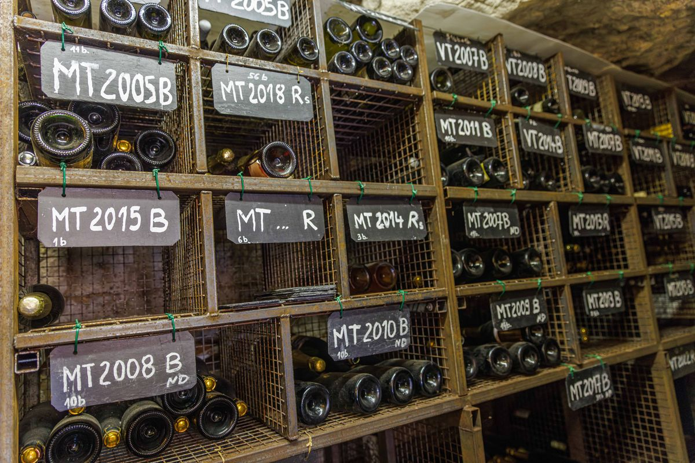

Les vignerons au service de la culture godvicienne
L’association cultive la vigne communale depuis 2002 et fabrique principalement la Perle de Gouvieux, vin mousseux selon la tradition champenoise en chardonnay et pinot noir.
2002Plantation de la vigne communale
28Vignerons amateurs passionnés
2 500Pieds de chardonnay et de pinot noir

La vigne communale
Situées sur un plateau orienté N-NO/S-SE, les vignes sont plantées sur un sol argilo-calcaire peu profond et un sous-sol de pierre calcaire.
Ce sont les vignerons de l’association qui assurent tous les travaux nécessaires à l’entretien de la parcelle et à la bonne conduite de la vigne, de la taille aux vendanges.
Découvrir la vigne communale
Vinification
La cave se situe dans une maison troglodytique du quartier des carrières. Les conditions de température nécessaires aux opérations de vinification et de stockage sont respectées (12 °C à 14 °C).
Les mises en bouteilles, tirage et dégorgement, après 2 ans sur lattes, sont effectués à la cave.
Découvrir l’association
Nos vins
Les Vignerons de Gouvieux produisent des vins effervescents, Perle de Gouvieux blanc de blancs et Perle de Gouvieux rosé, ainsi que des vins tranquilles, avec le Coteaux de Gouvieux Chardonnay et le Coteaux de Gouvieux Pinot noir.
Découvrir nos vins